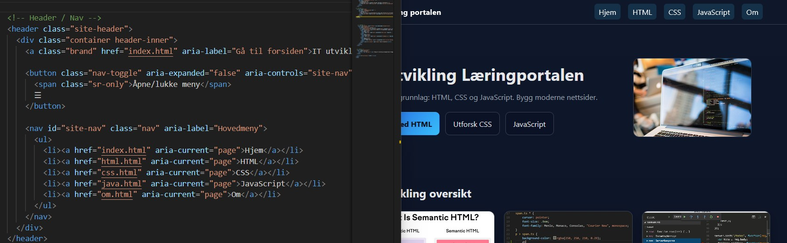
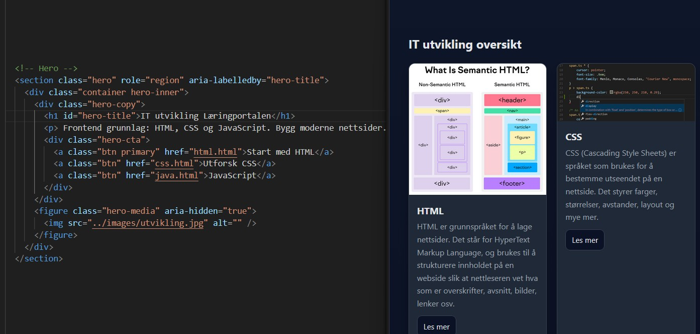
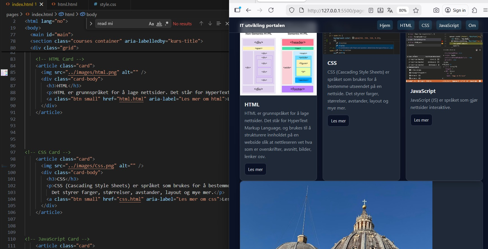
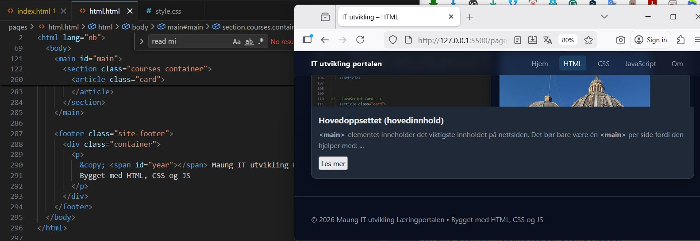

Grunnleggende HTML-dokument
HTML står for Hypertext Markup Language og brukes til å strukturere nettsider. ...
Frontend grunnlag: HTML, CSS og JavaScript. Bygg moderne nettsider.
HTML står for Hypertext Markup Language og brukes til å strukturere nettsider. ...
Meta‑tagger gir informasjon om nettsiden til søkemotorer. ...

<header>-seksjonenToppdelen på en nettside viser navigasjon, logoer og andre viktige elementer øverst på siden. I HTML opprettes den med <header>. ...

En hero‑seksjon er et stort innledende område øverst på en nettside. ...

<main>)<main> inneholder det viktigste innholdet på nettsiden. Det bør bare være én <main> per side: ...

En bunntekst opprettes i HTML ved hjelp av
<footer class="site-footer">. Klassen
site-footer styrer utseendet.
<span id="year"></span> er et tomt
område der JavaScript automatisk setter inn gjeldende år.
...